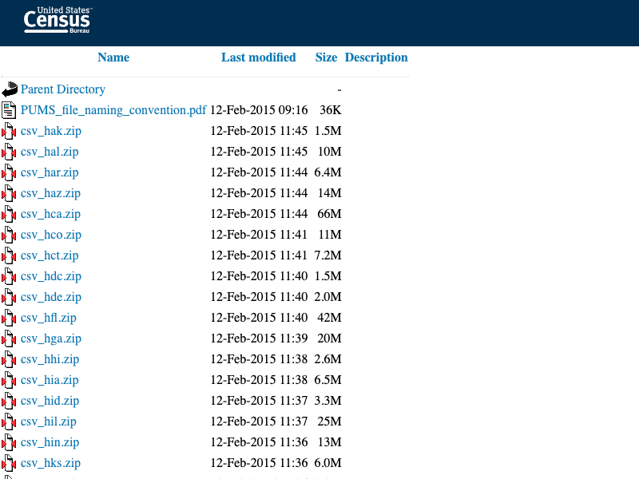
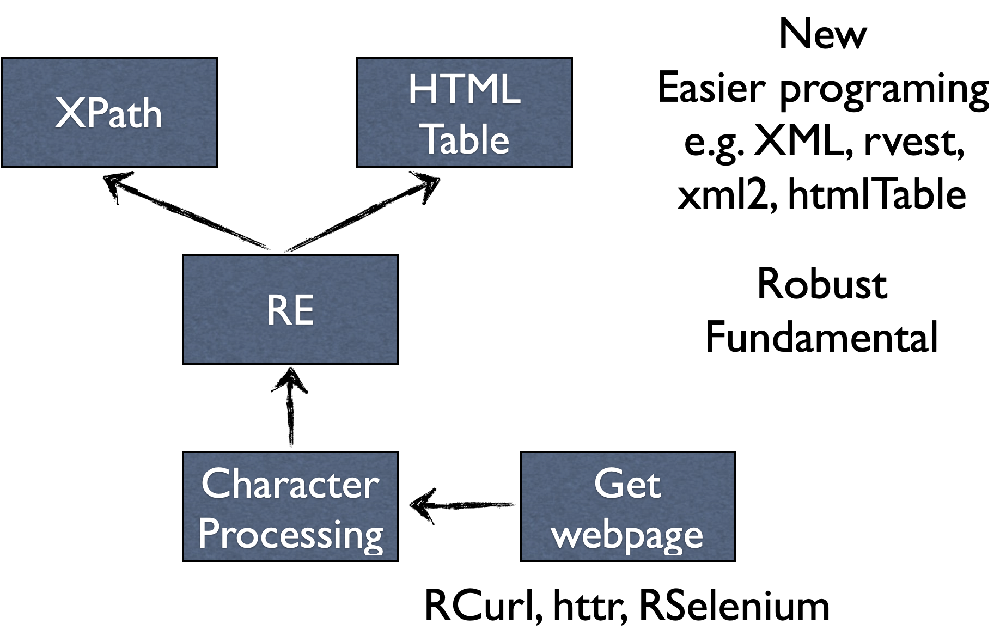

Statistical
Computing
Lec11 String
Xi (Rossi) LUO
Department of Biostatistics and Data Science
School of Public Health
The University of Texas Health Science Center at Houston
Why Text?
- Internet/cloud is the largest data warehouse
- Best to disseminate data and results
- Web pages are data themselves
Other Text Data
- Books, newspapers
- Phone texts, messages
- Records
- Measures by electronic devices
R Functions
-
grep searches substringpattern -
nchar finds length -
paste concate strings -
sprintf formatted printing -
substr sub-strings extraction by indices -
strsplit split by delimiter -
regexpr finds first instance of pattern -
gregexpr finds all instances of pattern
Case
 https://www2.census.gov/acs2013_3yr/pums/Example
a <- scan("http://www2.census.gov/acs2013_3yr/pums/", "character")
## remove junks
a <- a[grep("csv", a)]
## extract the file names
a <- substring(a, 7, 17)
## get the links to the zip files
baseurl <- "http://www2.census.gov/acs2013_3yr/pums/"
aurl <- paste(baseurl, a,sep="")
## Download the files automatically
for (i in seq_along(a)) {
print(paste0("Downloading ", a[i]))
download.file(aurl[i], a[i])
## To avoid overwhelming the web traffic,
## Add pauses between downloads to mimic human clicking
Sys.sleep(10)
}
Strategy Summary
- Retrieve the html text
- Examine the patterns for the wanted info
- Trial and error to extract info, strip junks and match patterns
- Automatic downloading (with pauses)
Regular Expressions
RE
- Formulation of search patterns
- General strategy implmented in almost all modern computing languages
- Enable efficient expression of patterns
Example

DNA consists of A, T, C, G, usually the format data stored
Example
- Given a long text string
myDNA - Suppose we want to look for DNA segments within myDNA that start and end like “AT...CG”, where
... stands for any number of T’s
- examples: GCATCG, GCATTCG, GCATTTCG, ...
- How do write this in R?
Naive Implementation
for (i in 1:length(myDNA)) {
if (myDNA[i,(i+3)] == “ATCG” ||
myDNA[i,(i+4)] == “ATTCG” ||
myDNA[i,(i+5)] == “ATTTCG” ||
.....
myDNA[i,(i+9)] == “ATTTTTTTCG”) {
print(paste(“Pattern found at”, i)) } }
Drawbacks
- The coding effort of exhausting the cases
- Only works for a short list of simple cases
- Difficult to read and modify codes
- Slow to run for large data
RE Solution
grep("AT+CG", myDNA)
Describing Patterns
- “Generic” string to describe the pattern, e.g. "AT+CG"
- Special characters, e.g. + means 1 or more repeats of the previous one
- Similar across languages with minor modifications in R
RE Punctuations
- “.”: any characters; “\\.”: you really mean “dot”
- “[]”: any listed will match
- “[ab]”: a or b; “[a-d]”: either a, b, c, or d
- “^”: beginning of line
- Exception: “[^a-d]”: anything but a, b, c, or d
- “$”: end of line
- “*”: zero or one more repeats
- “+”: one or more repeats
- “()”: matched substring
Example
myDNA <- c("ATCG", "CCATCG", "ATGCG", "ATTTCCG",
"ATTTTTTCGGGG", "ATTCGGGATCG")
myDNA[grep(".*A.*", myDNA)]
Output: [1] "ATCG" ... [6] "ATTCGGGATCG"
myDNA[grep(".+A.+", myDNA)]
Output: [1] "CCATCG" "ATTCGGGATCG"
myDNA[grep("^[AT]+.*[G]+$", myDNA)]
Output: [1] "ATCG" "ATGCG" "ATTTCCG" "ATTTTTTCGGGG" "ATTCGGGATCG"
Example
> myDNA <- c("ATCG", "CCATCG", "ATGCG", "ATTTCCG",
"ATTTTTTCGGGG", "ATTCGGGATCG")
> sub("ATT?CG", "haha", myDNA)
[1] "haha" "CChaha" "ATGCG" "ATTTCCG" "ATTTTTTCGGGG"
[6] "hahaGGATCG"
sub("(AT+CG)", "\\1_\\1_haha", myDNA)
Output
[1] "ATCG_ATCG_haha" "CCATCG_ATCG_haha"
[3] "ATGCG" "ATTTCCG"
[5] "ATTTTTTCG_ATTTTTTCG_hahaGGG" "ATTCG_ATTCG_hahaGGATCG"
Example
> myDNA <- c("ATCG", "CCATCG", "ATGCG", "ATTTCCG",
"ATTTTTTCGGGG", "ATTCGGGATCG")
> strsplit(myDNA, "AT+CG")
[[1]]
[1] ""
...
[[5]]
[1] "" "GGG"
[[6]]
[1] "" "GG"
Example
> regexpr("AT+CG", myDNA)
[1] 1 3 -1 -1 1 1
attr(,"match.length")
[1] 4 4 -1 -1 9 5
attr(,"index.type")
[1] "chars"
attr(,"useBytes")
[1] TRUE
> gregexpr("AT+CG", myDNA)
[[1]]
[1] 1
attr(,"match.length")
[1] 4
attr(,"index.type")
[1] "chars"
attr(,"useBytes")
[1] TRUE
[[2]]
[1] 3
attr(,"match.length")
[1] 4
attr(,"index.type")
[1] "chars"
attr(,"useBytes")
[1] TRUE
Example
> x <- "http://en.wikipedia.org/wiki/Data_science"
> m <- regexec("^(([^:]+)://)?([^:/]+)(/[^/]+)(/.*)", x)
> m
[[1]]
[1] 1 1 1 8 24 29
attr(,"match.length")
[1] 41 7 4 16 5 13
...
> regmatches(x, m)
[[1]]
[1] "http://en.wikipedia.org/wiki/Data_science"
[2] "http://"
[3] "http"
[4] "en.wikipedia.org"
[5] "/wiki"
[6] "/Data_science"
Strategy Summary
- Identify the goal of RE
- Choose right function
- Start with broad matches and refine
- RE by default find longest substring matching patterns
- Refine match by editing punctuations
Web Scraping
https://en.wikipedia.org/wiki/COVID-19
Example
install.packages("RCurl", repo = 'https://cloud.r-project.org')
library(RCurl)
a <- getURL(theurl)
## format a (e.g. adding line breaks) for better readability
a <- readLines(tc <- textConnection(a)); close(tc)
a[grep("IFR estimate per age group", a)]
Output
[1] "<caption>IFR estimate per age group<br />(to December 2020)...
HTML
- HTML: HyperText Markup Language
- HTML processing is an important and time consuming task
- Many high level processing tools have been developed for extracting data from HTML
- HTML has specific formats and markups
- XML (Extensible Markup Language) also contains markups
HTML as Tree
<!DOCTYPE html><html><body><p>paragraph1.</p>
<p>paragraph 2.</p></body></html>
HTML Parser
- Build the tree by applying REs on html
- Data are contained in nodes
- another high level “RE” to extract the nodes
- Example: XPath [http://www.w3schools.com/xpath/]
- Limitations: HTML standards are changing very fast. Parsers may generate errors
Example
install.packages("XML", repo = 'https://cloud.r-project.org')
library(XML)
tbl <- readHTMLTable(a)
tbl[3]
Output
$`IFR estimate per age group(to December 2020)[307]`
V1 V2
1 Age group IFR
2 0–34 0.004%
3 35–44 0.068%
4 45–54 0.23%
5 55–64 0.75%
6 65–74 2.5%
Overview of Tools
References
- AoRP: ch 11
- http://stat.ethz.ch/R-manual/R-devel/library/base/html/regex.html
- http://www.w3schools.com/tags/ref_httpmethods.asp